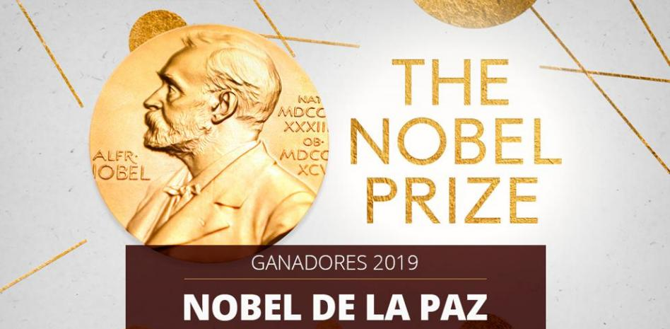

Logramos abrir más de 100 centros de Reciclandog en 35 países ayudando y adaptándonos a las necesidades de sus diferentes faunas y ecosistemas, con tu ayuda podemos hacer cada vez más y volver nuestro planeta un lugar más sustentable y empático.
¡Hola, somos Reciclandog! Desde nuestros comienzos en 2007 nos identificamos como una comunidad consciente del problema climático en busca de cambiar el rumbo de nuestro planeta a un futuro más sustentable y empático para todos sus habitantes. ¡Por eso nos dedicamos a enfrentar la contaminación de residuos convirtiéndola en diferentes productos para quienes más queremos, tales como sillas de ruedas, para mascotas con discapacidades motrices, juguetes, camas, snacks y mucho más!
¡Pero no podemos hacerlo solos, necesitamos tu ayuda! Aparte de recolectar, limpiar y reinventar residuos contamos con las donaciones más que nunca para poder hacerlo posible, con tu compromiso podemos ayudar a más de 10.000 refugios de animales en el mundo y más de 5.000 animales por mes en estado de abandono. Por eso si quieres ayudarnos puedes hacerlo con, colchones, telas, herramientas, plásticos, comida, entre otros.
Gracias al compromiso humanitario logramos ser reconocidos por nuestra labor como una de las empresas más sustentables por reconocidos países y premios como el más reciente el cual fue el Nobel de la Paz 2019. El cual fue dedicado profundamente a cada persona en este planeta que accedió a trabajar con nosotros para ayudar no solo a los animales, sino a todo el mundo para hacer un futuro unido en nuestro hermoso hogar llamado Tierra.

Logramos abrir más de 100 centros de Reciclandog en 35 países ayudando y adaptándonos a las necesidades de sus diferentes faunas y ecosistemas, con tu ayuda podemos hacer cada vez más y volver nuestro planeta un lugar más sustentable y empático.